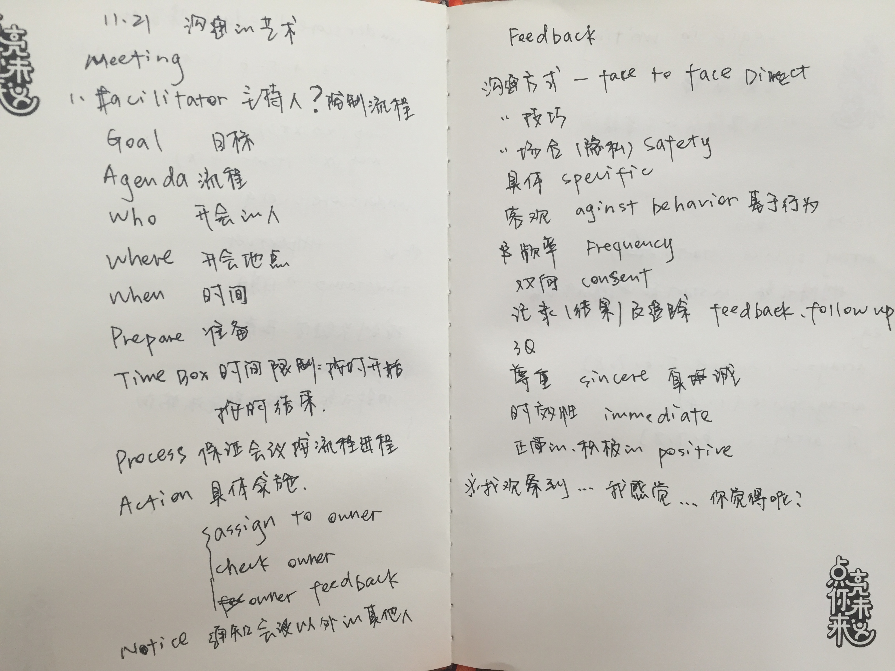
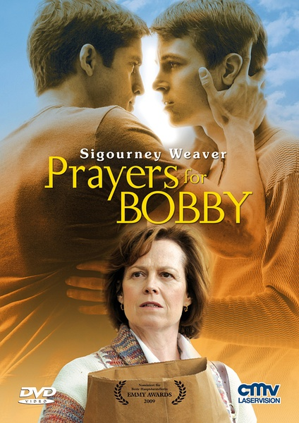
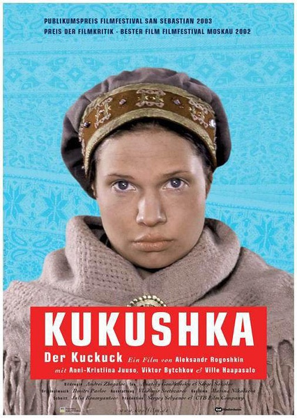

沟通技巧
上完课后，特意去网上百度了一下沟通技巧：
所谓沟通技巧，是指人具有收集和发送信息的能力，能通过书写、口头与肢体语言的媒介，有效与明确地向他人表达自己的想法、感受与态度，亦能较快、正确地解读他人的信息，从而了解他人的想法、感受与态度。 沟通技能涉及许多方面，如简化运用语言、积极倾听、重视反馈、控制情绪等等。虽然拥有沟通技能并不意味着成为一个有效的管理者，但缺乏沟通技能又会使管理者遇到许多麻烦和障碍。
经过本次课程，感觉对上面这种抽象的定义有了更深刻的理解。
课程回顾
本周的课程从沟通的角度入手，详细介绍了项目流程、会议以及Feedback各方面需要注意的事项。特别是上午项目流程方面，从一个实际的简单施工项目出发，讲解了在制定项目计划过程中可能遇到的各种问题，以及解决方案，形象的了解了公司工作的方式，很棒。
下午的课程从Meeting和Feedback两方面针对上午的内容以关键字的形式给出了总结如图所示， 加强了我对项目沟通的认识。  同时学习了如何正确的给别人做Feedback：
我观察到...我感觉...你觉得呢？
很有启发的一个句式，好的沟通方式可以拉近人与人之间的距离，我在这方面学习的地方还有很多。
相关推荐
本片根据真人真事改编。Bobby（瑞恩·凯利 Ryan Kelley 饰）是一个善良、虔诚的少年，有爱他的家人。但在他向家人坦白自己的性倾向后一切改变了。母亲Mary（西格妮·韦弗 Sigourney Weaver 饰）认为同性恋会下地狱的训诫，想尽办法矫正儿子。而Bobby的痛苦与日俱增。在满20岁生日前Bobby认识了开朗青年David，可Mary拒绝接受，并以有一个同性恋儿子为耻。Bobby伤心的离开家最后选择死亡来结束内心的折磨。他的死彻底唤醒了家人，尤其是Mary，她在无尽的悔恨中开始接触同性恋人群，参加PFLAG小组，与神职人员探讨圣经解释。在翻阅儿子的日记后，她开始直面自己认同儿子。失去儿子的母亲在倾盆大雨中失声痛哭，雨水和泪水将固执、偏见和不理解洗刷得一干二净。Mary此后将毕生投入到同志维权事业中，帮助那些和Bobby一样的少年。 
故事发生在1944年的秋天，芬兰士兵维伊克（威勒·哈派塞罗 Ville Haapasalo 饰）和苏军少尉伊万（克多·贝彻科夫 Viktor Bychkov 饰）都走到了各自人生的尽头。维伊克因为违反了军令而被锁在了一块巨大的岩石上，而伊万则因遭到诬陷而坐上了前往审判场的汽车。神秘女人安娜（安妮·克里斯汀娜·朱索 Anni-Kristiina Juuso 饰）的出现成为了两人最后的希望，她不仅将垂危的两人从死亡线上挽救了回来，还将他们带到了自己所居住的，犹如世外桃源般的仙境之中。
在那里，三个语言互不相同的人开始了他们的奇异生活，对于这种平静而友好的生活，每个人都乐在其中。停战的消息传来了，这意味着三人生活无法再继续下去，面对心中涌现的感情，依维柯和伊万再一次的站到了人生的十字路口前。
